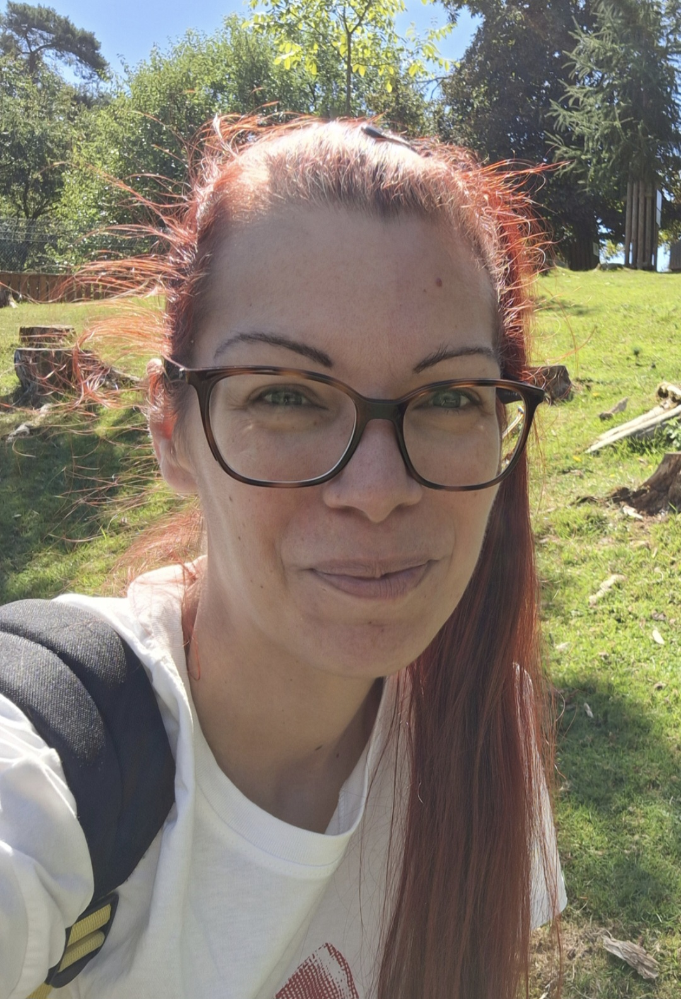

Copywriting für Neuro-Inklusion
Authentisch statt manipulativ.
Ich schreibe für Coaches, Mental-Health-Brands und neuroinklusive Unternehmen, die Menschen nicht überreden wollen — sondern wirklich erreichen möchten.
Als hochsensible Mutter eines neurodivergenten Kindes kenne ich die Zwischenräume, in denen klassische Kommunikation oft scheitert.
Für viele bedeutet Remote-Arbeit Freiheit. Für mich bedeutet sie: da sein können. Beim Meltdown. Bei Überforderung. Beim emotionalen Muskelkater. Halten – aushalten – bleiben.
Genau diese Regulations-Kompetenz bringe ich heute in meine Texte ein. Denn Menschen fühlen, ob Kommunikation Druck macht — oder Sicherheit gibt.
Preise & Pakete
Transparente Richtwerte. Keine versteckten Kosten. Wenn du Fragen hast, klären wir alles vorab in Ruhe.
Ich schaue mir deine Website oder Salespage an und gebe dir ruhiges, klares Feedback zu möglichen Hürden in der Kommunikation.
ab 250 €
Dieses Paket anfragenEine Verkaufsseite, die Orientierung gibt statt Druck zu erzeugen. Klar, menschlich und auf deine Zielgruppe abgestimmt.
ab 1.200 €
Dieses Paket anfragenBegleitung für LinkedIn oder Newsletter. Kontinuierlich, ohne Hektik, in einem verlässlichen Rhythmus.
ab 800 € / Monat
Dieses Paket anfragenE-Mail-Strecken, Texte oder Skripte nach Bedarf. Alles wird vorher gemeinsam ruhig besprochen.
120 € / Stunde
Alle Preise zzgl. MwSt. (sofern anfallend). Erstkontakt ist immer unverbindlich.
Arbeitsproben
In einer Welt voller Socken-Schubladen ist es nicht immer einfach, querzudenken. Wir reden viel über Neurodiversität — aber hören wir den Menschen auch wirklich zu?
Neurodivergente Köpfe tun genau das, was vielen Unternehmen heute fehlt: Sie sehen die Welt durch eine völlig andere Linse.
Wer bereit ist, Zukunft neu zu denken, wird belohnt. Denn neurodiverse Menschen erkennen Muster, Fehler und Chancen oft lange bevor andere sie sehen.
Besonders bei neurodivergenten Kindern bewirkt Isolation oft genau das Gegenteil von dem, was wir eigentlich wollen.
Unsere sensiblen Kinder brauchen nicht noch mehr Druck — sondern Co-Regulation.
Manchmal ist es nur ein ruhiges Danebensitzen. Aber genau dort beginnt Sicherheit.
Über mich
Ich bin Jennifer — Quereinsteigerin, Löwenmama und Copywriterin für Neuro-Inklusion.
Ich glaube nicht an manipulative Marketing-Tricks. Ich glaube an Texte, die sich nach Menschen anfühlen.
Nicht perfekt. Nicht laut. Aber ehrlich.
Meine Erfahrung mit Hochsensibilität, ASS und PDA ist keine Nische für mich — sondern gelebte Realität.
Und genau deshalb erkennen sich viele Menschen in meinen Worten wieder.

Zusammenarbeit
Ganz ohne Druck. Ganz in deinem Tempo.
Nachricht schreiben